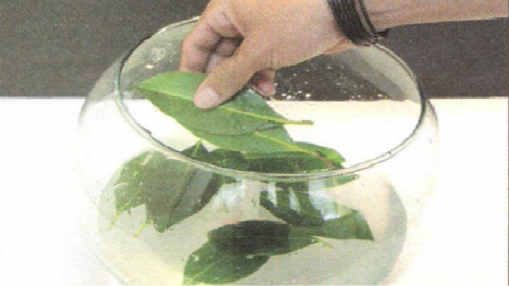
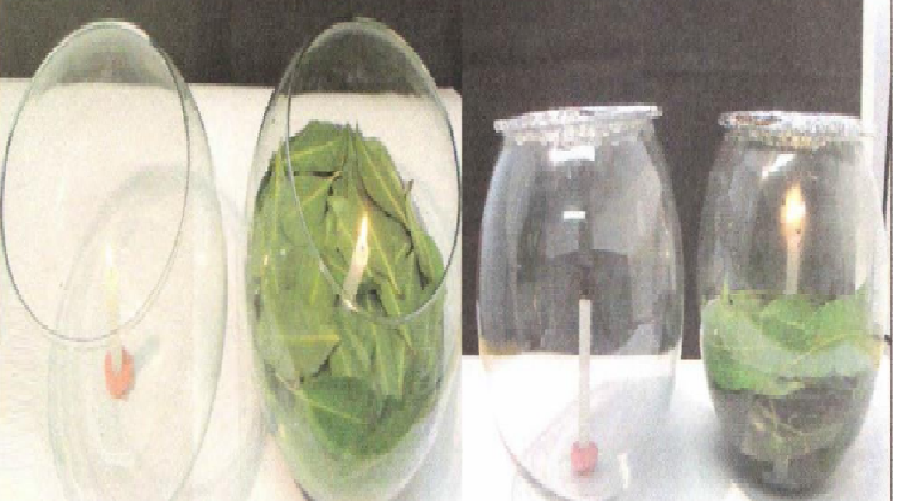

Prática 1: ABSORVENDO O CO2
Materiais necessários:
2 velas;
Folhas;
Fósforos ou isqueiro;
1 massa de modelar;
Água;
2 recipientes de vidro com tampa.
Procedimentos:
1. Pegue a massa de modelar e a use para grudar as velas no fundos dos 2 recipientes.
2. Bote os recipientes sobre o sol, um ao lado do outro e coloque agua ate estiver cobrindo as velas;
3. Coloque as folhas em um dos recipientes para que cobram a superficie da água, quanto mais folhas melhor;
3. Acenda as velas e tampe o recipiente para que nenhum ar entre ou saia.
5. Quando as velas se apagarem você irá perceber que a vela que estava no recipiente com folhas demorou mais tempo pra apagar. O motivo disso é porque velas liberam dióxido de carbono e consomem oxigênio, como folhas absorvem dióxido de carbono e liberam oxigênio isso faz com que o oxigênio do recipiente dure mais e consequentemente a vela também.